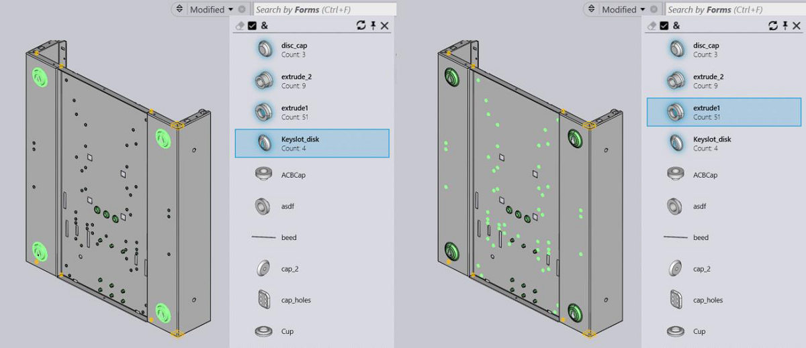

Praxis also displays highlighted preview of the Form when mouse is hovered over a specific form in the part. This is a handy feature during the forms approval, discussed in the next section.

● Select Forms in the search box and open the dropdown to see the list.
● Now select a part with the forming (preferably with a multiple of them for clarity) and double click to switch to the details pane.
● Switch to simulation mode and double click on Raw Material route icon ( ). This will open the CAD preview in the preview pane.
● Now move the mouse over the highlighted Form in the dropdown list to highlight it back in the preview pane.